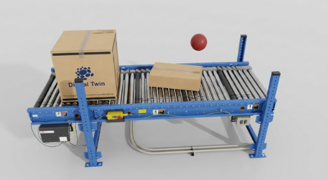

Project
ovfmi
FMI/SSP co-simulation for OpenUSD digital twins — load behavior models from a USD stage, step them with FMPy, render with ovrtx, and optionally close the loop with ovphysx.

ovfmi is a reusable, USD-native library that adds behavior to industrial digital twins by binding FMI co-simulation models to OpenUSD scenes through a custom schema. USD describes world state; FMI and SSP supply simulation behavior. ovfmi joins them so a USD layer can describe both the scene and its simulation model in a form that remains readable and composable by USD tools.
Applications use the ovfmi Python API to discover FmuInstance and
SspInstance prims, instantiate their referenced models through FMPy, route values
between model variables and USD attributes, and advance the models. The included
demoapp/ shows how to combine the library with ovstage, ovrtx
rendering, and optional ovphysx simulation — without a full Omniverse Kit install.
This is a pre-release Omniverse Labs project (ovfmi 0.2.0). APIs and the USD-FMI schema may change.
What you can do
- Declaratively embed individual FMUs and packaged SSP systems in USD
- Run FMI 2.0 and FMI 3.0 co-simulation models through the FMPy backend, plus SSP 1.0 archives
- Map FMI variables to USD attributes, including selected vector components and ranges
- Step simulation deterministically through a documented Python API
- Couple FMU control logic to ovphysx rigid bodies in the sample application
- Run the supplied examples with live ovrtx rendering or in headless mode
Prerequisites
- Python 3.10 through 3.13
- Windows or Linux on x86_64
- Compatible
ovstage,ovrtx, andovphysxpackages for the demo app - NVIDIA RTX GPU and recent driver for ovrtx rendering
- Git with Git LFS, and a C++17 compiler to build the demo FMUs
Fast start
-
Clone
projects/ovfmi
and install the NVIDIA runtime packages (
ovrtx,ovstage,ovphysx) into your base Python environment. -
From the project directory, run the demo setup:
bash demoapp/setup.sh(Linux) orpowershell -ExecutionPolicy Bypass -File demoapp\setup.ps1(Windows). -
Launch a demo, for example:
demoapp/.venv/bin/python demoapp/main.py demoapp/usd/fmi_parser_test.usda
The first ovrtx run can take several minutes while shaders compile; later runs reuse the cache.
In the live viewer use W/A/S/D to move, right-mouse drag to look, and
Ctrl+C or close the window to stop.
Demo scenes
fmi_parser_test.usda— one FMU drives a sphere height attributepd_controller_test.usda— FMU reads pose/velocity and writes force through ovphysxssp_orbit.usda— SSP instance with system-level connectorsconveyor/ConveyorFMI.usda— conveyor twin with rollers, sensor, and SSP controller
How it works
Author FmuInstance / SspInstance prims that reference
.fmu or .ssp archives and map model variables to USD attributes.
The runtime discovers those prims, instantiates models via FMPy, and synchronizes data each
simulation step. The demo app pairs ovrtx rendering with optional ovphysx rigid-body simulation
through shared ovstage data rather than slow per-attribute USD I/O.
Repository path
Full source, schema docs, architecture notes, and demos live in the project folder:
Clone and explore:
projects/ovfmi/
Schema reference: USD-FMI Schema · Standards: FMI, SSP, OpenUSD